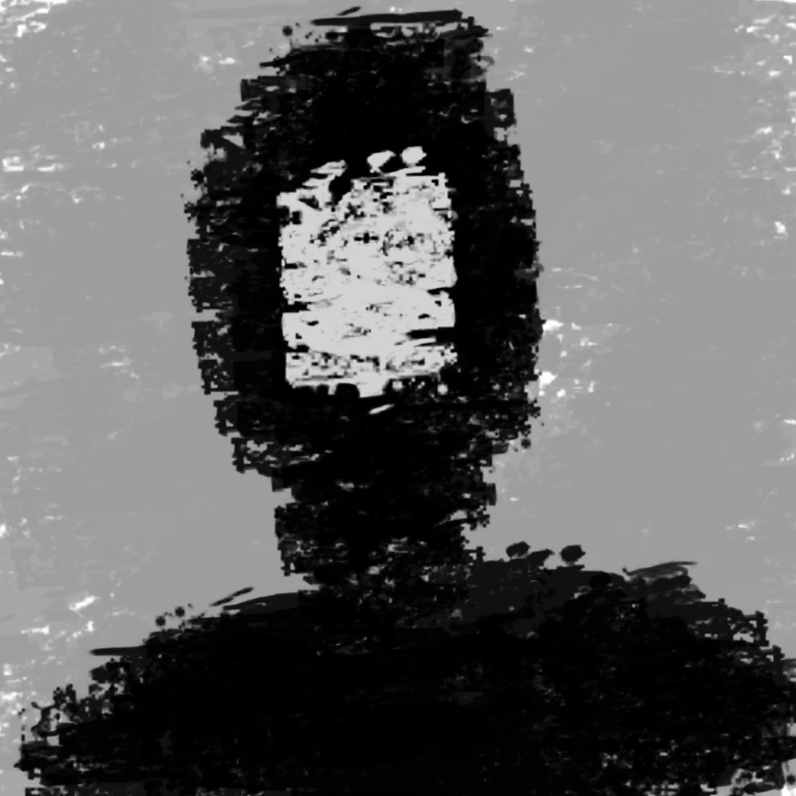

*You observe the staff members and their grotesque actions. They call children retarded, crazy, and un-human. You see irony in their remarks, as they're the inhumane ones. You walk around and speak to other boys and girls who are in this hospital
for a plethora of reasons. Some have drug issues, some have family issues, some are depressed, some have witnessed murder. Each is different and requires different attention, yet each is stuffed in this same place with you. You begin questioning
the legitimacy of this facility, if any. Eventually, your mother makes it to the hospital to visit you. The black demon appears.*